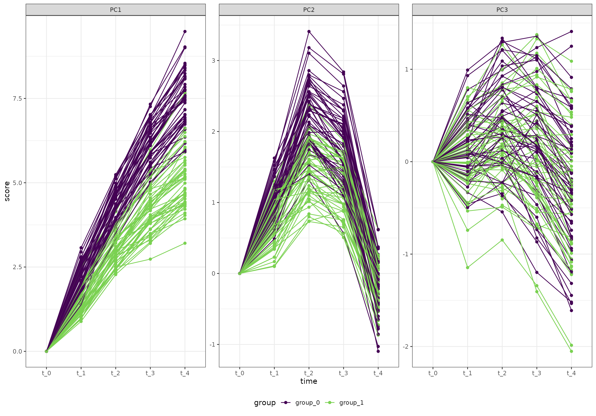
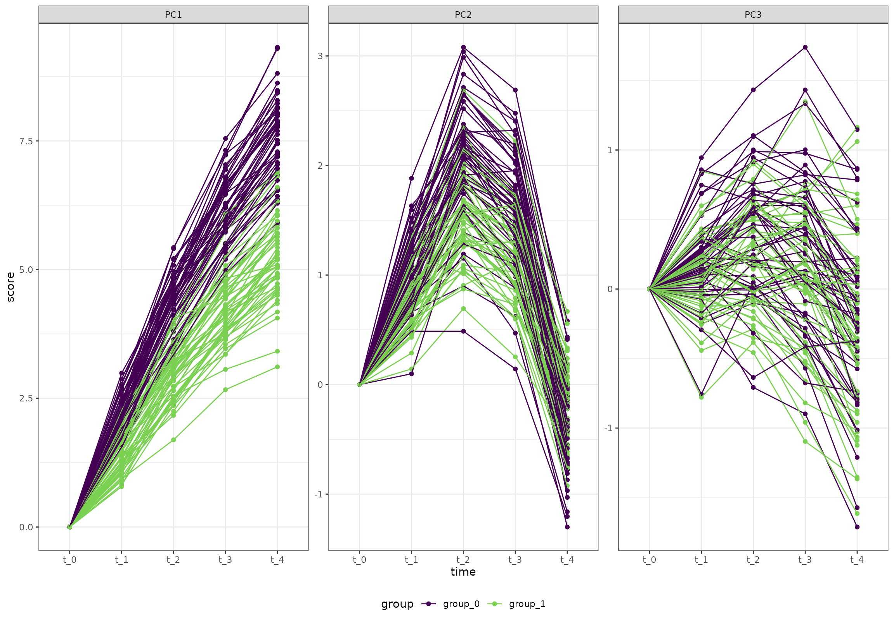

Using ALASCA for classification or prediction
We will use the same code to simulate data sets here as in the Regression vignette. In brief, we generate a training and test data set, and use ALASCA and PLS-DA to test group classification.
Generate a data set
We will start by creating an artificial data set with 100 participants, 5 time points, 2 groups, and 20 variables. The variables follow four patterns
- Linear increase
- Linear decrease
- A v-shape
- An inverted v-shape
The two groups are different at baseline and one of the groups have larger changes throughout the study.
n_time <- 5
n_id <- 100
n_variable <- 20
df <- rbindlist(lapply(seq(1,n_id), function(i_id) {
rbindlist(lapply(seq(1,n_variable), function(i_variable) {
r_intercept <- rnorm(1, sd = 5)
i_group <- i_id %% 2
if (i_group == 1) {
beta <- 2 + rnorm(1)
} else {
beta <- 3 + rnorm(1)
}
temp_data <- data.table(
id = paste0("id_", i_id),
group = paste0("group_", i_group),
time = seq(1, n_time) - 1,
variable = paste0("variable_", i_variable)
)
if ((i_variable %% 4) == 0) {
temp_data[, value := r_intercept + beta * time]
} else if ((i_variable %% 4) == 1) {
temp_data[, value := r_intercept - beta * time]
} else if ((i_variable %% 4) == 2) {
temp_data[, value := r_intercept + beta * abs(time - n_time/2)]
} else {
temp_data[, value := r_intercept - beta * abs(time - n_time/2)]
}
temp_data[, value := value + rnorm(n_time)]
temp_data[, value := value * i_variable/2]
temp_data
}))
}))Overall (ignoring the random effects), the four patterns look like this:
ggplot(df[variable %in% c("variable_1", "variable_2", "variable_3", "variable_4"),],
aes(time, value, color = group)) +
geom_smooth() +
facet_wrap(~variable, scales = "free_y") +
scale_color_viridis_d(end = 0.8)
#> `geom_smooth()` using method = 'loess' and formula = 'y ~ x'
We want time to be a categorical variable:
df[, time := paste0("t_", time)]Generate a second data set
We now generate a second data set using the same code as above. We will do classification on these data.
dfn <- rbindlist(lapply(seq(1,n_id), function(i_id) {
rbindlist(lapply(seq(1,n_variable), function(i_variable) {
r_intercept <- rnorm(1, sd = 5)
i_group <- i_id %% 2
if (i_group == 1) {
beta <- 2 + rnorm(1)
} else {
beta <- 3 + rnorm(1)
}
temp_data <- data.table(
id = paste0("id_", i_id),
group = paste0("group_", i_group),
time = seq(1, n_time) - 1,
variable = paste0("variable_", i_variable)
)
if ((i_variable %% 4) == 0) {
temp_data[, value := r_intercept + beta * time]
} else if ((i_variable %% 4) == 1) {
temp_data[, value := r_intercept - beta * time]
} else if ((i_variable %% 4) == 2) {
temp_data[, value := r_intercept + beta * abs(time - n_time/2)]
} else {
temp_data[, value := r_intercept - beta * abs(time - n_time/2)]
}
temp_data[, value := value + rnorm(n_time)]
temp_data[, value := value * i_variable/2]
temp_data
}))
}))
dfn[, time := paste0("t_", time)]Subtract baseline
Later on, we will do classification on the test data set. But, as we would like to take individual differences into account, we create copies of the data sets and subtract the baseline for each participant.
subtract_baseline <- function(data) {
bsl <- data[time == "t_0", ]
colnames(bsl)[ncol(bsl)] <- "intercept"
data <- merge(data, bsl[, .SD, .SDcols = colnames(bsl)[colnames(bsl) != "time"]])
data[, value := value - intercept]
return(data[, .SD, .SDcols = colnames(data)[colnames(data) != "intercept"]])
}
dt_0 <- subtract_baseline(df)
dt_1 <- subtract_baseline(dfn)Run ALASCA and calculate scores
We now use the first data set to create an ALASCA model
res <- ALASCA(
df,
value ~ time*group + (1|id),
scale_function = "sdt1"
)
#> INFO [2026-01-11 20:29:33] Initializing ALASCA (v1.0.18, 2026-01-11)
#> WARN [2026-01-11 20:29:33] Guessing effects: `time+time:group+group`
#> INFO [2026-01-11 20:29:33] Will use linear mixed models!
#> INFO [2026-01-11 20:29:33] Will use Rfast!
#> WARN [2026-01-11 20:29:33] The `group` column is used for stratification
#> WARN [2026-01-11 20:29:33] Converting `character` columns to factors
#> INFO [2026-01-11 20:29:33] Scaling data with sdt1 ...
#> INFO [2026-01-11 20:29:33] Calculating LMM coefficients
#> INFO [2026-01-11 20:29:33] ==== ALASCA has finished ====
#> INFO [2026-01-11 20:29:33] To visualize the model, try `plot(<object>, effect = 1, component = 1, type = 'effect')`Next, we use the ALASCA::predict_scores() function
introduced in version 1.0.14 to get a score for each data point. Note
that the number of ASCA components can be specified. For simplicity, we
only use three here, but increasing the number of components may improve
the classification model.
Just for illustration, here is the first three PC scores of training set (on which we built the ALASCA model, without removing baseline):
ggplot(k_0, aes(time, score, color = group, group = id)) +
geom_point() +
geom_line() +
facet_wrap(~paste0("PC", PC), scales = "free_y") +
scale_color_viridis_d(end = 0.8)
And here is the test data set:
ggplot(k_1, aes(time, score, color = group, group = id)) +
geom_point() +
geom_line() +
facet_wrap(~paste0("PC", PC), scales = "free_y") +
scale_color_viridis_d(end = 0.8)
Using PLS-DA for classification
Since ASCA is not intended to be used for classification, we will construct a PLS-DA model using ASCA scores. Note that the number of components must be specified. In this example, we use four components as illustration.
Next, we do prediction on the test data set using the PLS-DA model above.
m <- predict(plsFit, kk_1[, .SD, .SDcols = colnames(kk_1)[!colnames(kk_1) %in% c("id", "group")]], type = "prob")
kkk <- data.table(
id = unique(k_1$id),
prob_0 = m[ , 1, 1],
prob_1 = m[ , 2, 1]
)
kkk[, pred := ifelse(prob_0 > prob_1, "group_0", "group_1")]
kkk <- merge(kkk, k_1[, .(id, group)])
kkk <- kkk[!duplicated(kkk$id), ]And, as we can see, the model does quite well:
caret::confusionMatrix(table(kkk[, .(pred, group)]))
#> Confusion Matrix and Statistics
#>
#> group
#> pred group_0 group_1
#> group_0 47 3
#> group_1 3 47
#>
#> Accuracy : 0.94
#> 95% CI : (0.874, 0.9777)
#> No Information Rate : 0.5
#> P-Value [Acc > NIR] : <2e-16
#>
#> Kappa : 0.88
#>
#> Mcnemar's Test P-Value : 1
#>
#> Sensitivity : 0.94
#> Specificity : 0.94
#> Pos Pred Value : 0.94
#> Neg Pred Value : 0.94
#> Prevalence : 0.50
#> Detection Rate : 0.47
#> Detection Prevalence : 0.50
#> Balanced Accuracy : 0.94
#>
#> 'Positive' Class : group_0
#>